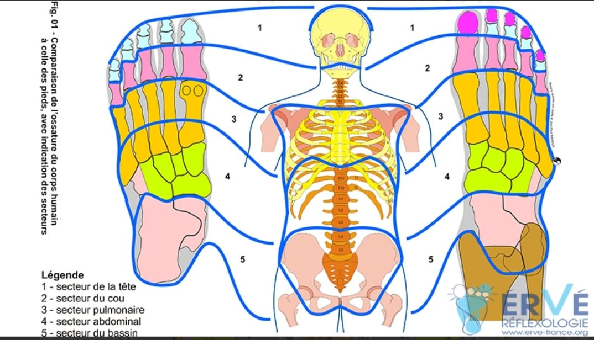

Née pour certains en Chine (plus de 5000 ans) pour d'autres chez les Incas (1200 ans avant JC)
Au cours du 16 ème siècle, la réflexologie est associée en Europe à la recherche sur la thérapie par les zones du corps. En 1917, au Etat Unis, le médecin William Fitzgerald, spécialiste ORL, publie un livre sur la thérapie des zones. Celui-ci démontre qu'en exerçant une pression sur certains points du corps, on peut se dispenser de la cocaïne, qui est à l'époque utilisée comme anesthésique. Il cartographie une première localisation des zones réflexes, en divisant le corps humain en 10 zones égales, correspond chacune à un doigt ou un orteil, se poursuivant sur la partie postérieure du corps de manière identique, et reliée entre elles par la circulation de flux énergétiques.
C'est toutefois en 1930, que la réflexologie va naître de la manière dont on l'a connaît aujourd'hui. Eunice Ingham, considérée comme " la mère" de la réflexologie moderne, s'inspira de la théorie de Fitzgerald W. pour établir une carte complète du pied ou elle définit les points et les zones réflexes sur les pieds et les mains en correspondance avec le corps.
Elle met en évidence l'existence de deux zones réflexes ; " la zone mère" en lien avec l'organe sain et " la zone périphérique" en lien avec l'organe malade. Puis, une troisième zone virtuelle précisant que l'organe en souffrance n'est pas forcément celui qui est la cause d'origine. Elle trouve son importance dans la compréhension du " leurre d'une maladie".
C'est à partir de 1985, que Jean Paul Barbier (ingénieur) et son épouse Joëlle se passionnent pour la réflexologie et se lancent dans leurs propres recherches. Dès 1990, à force de pratiques, ils établissent une nouvelle cartographie des organes sains sur le pied.
Le couple s'intéresse également aux vecteurs ou trajets permettant la circulation de l'énergie entre les différents organes créant, ainsi une découverte essentielle: celle du Vectoriel. C'est-à-dire qu'au même titre que la Médecine Traditionnelle Chinoise (MTC) à mis en lumière " les méridiens" similaire à " des autoroutes énergétiques", Jean Paul Barbier définit des vecteurs similaire à "des routes nationales départementales" sur le pied. Avec cette vision, la réflexologie plantaire sort de la notion passive du soin de bien-être pour passer à une notion active de médecine intégrative à part entière. En 1997, Mr Barbier décide de créer la première école ERVE (École de Réflexologie et de Vecteurs Énergétiques ).Après le décès en 2009 de J.P. Barbier, la direction des écoles ERVE est reprise par Corinne Gagné. Elle et son équipe continuent à s'enrichir et à faire progresser cette technique qui consiste à exercer des manipulations appropriées sur des zones réflexes. Elle a pour but de favoriser l'élimination des toxines afin de valoriser les ressources naturelles de l'organisme. C'est une réflexologie active qui apporte de multiples bienfaits, au-delà de la simple détente.
Qualifiée de médecine complémentaire par l'Organisation Mondiale de la Santé, la réflexologie est une approche manuelle et non médicamenteuse qui participe au mieux-être de la personne. La réflexologie est une technique de toucher thérapeutique. Par une pression spécifique des pouces et des doigts sur des "zones réflexes " des pieds ou des mains, elle permet d'émettre une action sur certaines parties du corps, glandes ou sur un organe. Elle trouve son art dans sa technique holistique. Le terme "holistique" est dérivé du Grec "holos" qui signifie "entier" car elle agit de manière à toucher la personne dans son intégralité physique, psychique, énergétique et psycho-émotionnelle. Nous rencontrons tous au cours de notre vie, des déséquilibres émotionnels, psychiques, physiques plus ou moins importants. Basé sur le principe que le pied est le miroir du corps, ce toucher réflexe entraîne une réaction de la partie du corps stimulée vers un équilibre physiologique naturel, que l'on appelle " l'homéostasie".
La réflexologie plantaire permet d'agir à distance sur l'organisme grâce aux 7400 terminaisons nerveuses présentes sous chaque pied, interconnectées aux différentes parties du corps par la moelle épinière et le cerveau. Elle va agir en profondeur sur tous les aspects de l'être, que ce soit au niveau mental, physique ou émotionnel. L'action sera naturellement plus rapide en passant par le biais du système nerveux autonome car le pied est le récepteur le plus sensible.
Chaque main possède 3000 terminaisons nerveuses. Tout comme les pieds, les mains constituent le miroir de notre corps. La main dispose d'un micro système énergétique élaborée et particulièrement précis pour les problèmes du haut du corps : tendinites, cervicalgie, diaphragme tendu... Sollicitées en permanence, les mains sont moins sensibles que les pieds mais permettent un travail intéressant et complémentaire à celui en réflexologie plantaire dont il renforce l'action.
La réflexologie agit sur tous les systèmes du corps humain à tous les âges de la vie :
Quelle que soit notre situation, chacun est soumis à des changements ( âge, emploi, maladie, traumatisme...) Ces variations ont des conséquences au niveau des organes. Ainsi, la réflexologie favorise la circulation sanguine, l'élimination des toxines et l'apaisement général de la personne. En tant que réflexologue, mon but sera de vous accompagner à identifier la cause des troubles et de manipuler la ou les zones sensibles afin de libérer les tensions et permettre à l'organisme de retrouver son équilibre.
Préventive : Nous pouvons travailler sur l'équilibre du corps de manière préventive. Principalement avant chaque changement de saison. À ce moment là, le corps subit des bouleversements physiologiques et a besoin d'être soutenu pour vivre cette période sereinement.
Le stress " maladie des temps modernes" : globalement, 75% des maux sont liés au stress. Il fait partie de la vie et peut constituer une force positive ou à l'inverse avoir des répercussions sur notre organisme comme ; des tensions musculaires, accélération de la fréquence cardiaque, troubles du sommeil, difficulté dans la gestion des émotions...Le processus de régulation du corps est alors interrompu ou gêné, laissant notre organisme fragilisé. La réflexologie peu alors diminuer le stress et entraîner une meilleure réponse immunitaire limitant le fait d'être malade ou de déclencher d'autres maladies.
La réflexologie s'adresse à toutes personnes tout au long de sa vie, souhaitant s'investir dans son chemin de guérison.
Des parents sont parfois démunis face à leur bébé ( cries, pleurs...). La réflexologie peut accompagner les petits maux du nourrisson et l'aider à s'adapter à ce nouveau monde. Ils réagissent très bien et plus rapidement ( séance courte) car moins de blocages énergétiques que les adultes. Elle apporte une aide précieuse pour: troubles du sommeil, stress- anxiété, douleur dentaire, troubles digestifs (coliques, reflux) asthme, rhume. Mais aussi, je propose des séances pour les mamans fatiguées ou angoissées car, c'est bien connu, une maman zen=un bébé zen (ou presque).
Ils peuvent eux aussi être stressés de part les questionnements liés à l'adolescence et à ce corps qui change. La réflexologie permet d'apaiser. Elle peut aider à canaliser, à acquérir une plus grande concentration et une détente à l'approche des examens scolaires.
Un accompagnement dans les différentes phases de vie pour limiter les effets des émotions qui peuvent affecter le bon fonctionnement hormonal et entraver la circulation de l'énergie. Pour les femmes enceintes, elle est reconnue pour soulager les tensions des futurs mamans. La méthode ne sera pas pratiquée pendant les 3 premiers mois de grossesse ou en cas de repos strict ou saignement vaginaux. Un massage tout en douceur à l'huile végétale (sans H.E) pour rendre cette période sensible, belle.
La réflexologie permet un rééquilibrage des différentes parties du corps pour un fonctionnement optimal. Elle prépare le corps à l'effort et ainsi limite le risque de blessures. Elle favorise l'élimination des toxines et la récupération.
Cette pratique pourra apaiser et alléger le corps comme l'esprit, souvent douloureux et agité avec l'âge ou la maladie ( prévention des états dépressifs). Elle permet de dénouer les tensions articulaires, réduit les symptômes de l'arthrose et favorise la baisse de la tension artérielle. La circulation lymphatique et sanguine sera optimisée.
Des études ont montrés les bienfaits La réflexologie dans l'accompagnement des personnes atteintes de maladies dégénératives comme la maladie d'Alzheimer et Parkinson. Elle va aider à préserver leurs capacités restantes et ainsi améliorer leur qualité de vie. Cette approche permettra d'apaiser, détendre en libérant les tensions et en apportant vitalité. Pour toutes personnes en traitement médicamenteux, la réflexologie peut soutenir l'organisme en atténuant les effets secondaires du traitement et apporter un regain d'énergie.
La réflexologie est un soin de support de plus en plus utilisé en oncologie. Ellle est reconnue pour aider le corps à mieux supporter les effets secondaires de traitements de chimiothérapie ( nausées, diarrhée, douleurs musculaires, articulaires, insuffisances rénales ...) en drainant les toxines et en dynamisant l'organisme. Elle contribue à une meilleure récupération post- traitement. L'avis de l'oncologue sera nécessaire avant toute prise en charge. En aucune façon, la réflexologie ne se substitue aux traitements médicamenteux ni aux actes de kinésithérapie. Elle ambitionne avant tout, d'aider à mieux vivre avec la maladie et d'apporter du confort. La pratique de la réflexologie sera basée sur les troubles ressentis par la personne et sur l'évolution de ces derniers d'une séance à l'autre
La réflexologie peut également accompagner la personne avant ou après une opération. En pré opératoire pour diminution du stress et préparer la partie du corps concernée. En post opératoire pour une récupération et cicatrisation plus rapide. Les douleurs pourront être atténués. Utilisée en complément de la kinésithérapie. Il est tout fois recommandé d'effectuer un soin maximum trois semaines avant l'opération et d'attendre un mois après l'opération.
À l'issue de la séance, l'organisme va "travailler" pour éliminer les toxines déplacées lors du soin. Elles s'éliminent par les différents émonctoires (sous forme de sueur, urine, selles..) Selon vos besoins, votre réceptivité et votre charge émotionnelle, les réactions peuvent prendre différentes formes * une liste des effets consécutifs vous serons remis à la fin de votre séance. Les effets sont passagers et s'intègre dans un processus de nettoyage, normal de la vie de la maladie. Il sera intéressant d'être à l'écoute de son corps . Pour optimiser le processus d'auto-guérison, un lâcher prise s'offre à vous avec la possibilité de vous en saisir et d'opérer à votre rythme à une transformation en cultivant un mode de pensée et comportement positif et ainsi nourrir des émotions dynamisantes. N'oublions pas que nous sommes à l'image de ce que nous pensons et de la qualité de notre hygiène de vie. " L'énergie suit la pensée" Corinne Gagné